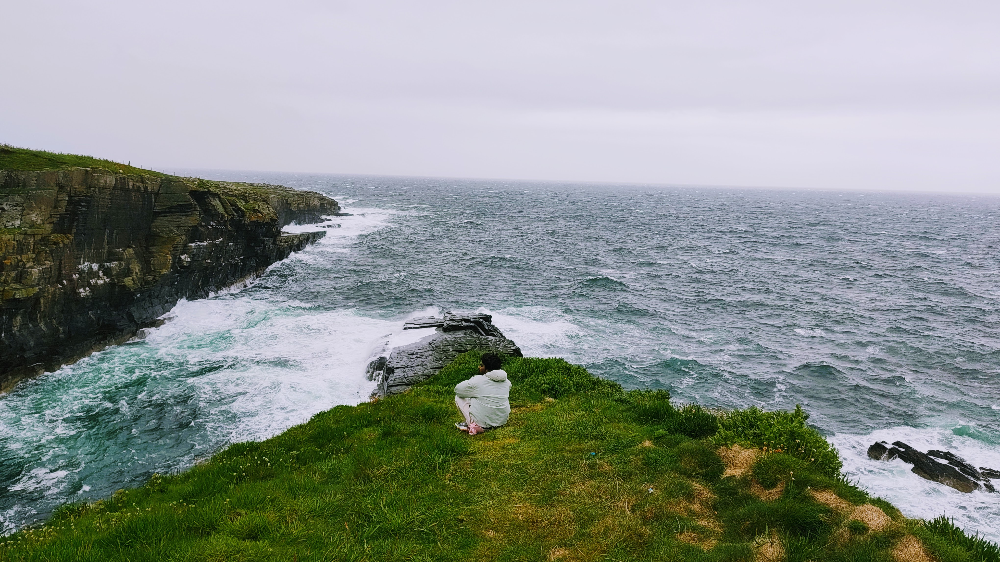

Ch.01 — Welcome
Where are the cracks at?
PhD researcher at TUM. Neural networks parametrize the density field in full waveform inversion; transfer learning pre-trains them to accelerate convergence.
Ch.02 — Work
Full waveform inversion for solid structures
Physics-based and neural-network-based inversion of elastic and acoustic wavefields for internal damage localization.
Wave-based damage detection
Damage is localized by inverting how elastic and acoustic waves scatter as they propagate through a structure, without direct access to the affected region.
Physics-informed learning
Adjoint-based inversion is combined with neural network parametrizations to regularize the reconstruction and accelerate convergence.
Engineering foundation
Methods build on mechanical and civil engineering: structural dynamics, finite element and spectral element discretizations.
Publications
Singh, D. S., Herrmann, L., Bürchner, T., Dietrich, F., & Kollmannsberger, S. (2026). Graph neural networks for full waveform inversion. Computational Mechanics, 1–17. https://doi.org/10.1007/s00466-026-02796-5
Singh, D. S., Herrmann, L., Sun, Q., Bürchner, T., Dietrich, F., & Kollmannsberger, S. (2025). Accelerating full waveform inversion by transfer learning. Computational Mechanics, 76, 323–344. https://doi.org/10.1007/s00466-025-02600-w
Read the walkthrough →Singh, D. S., Chowdary, G. B. L., & Roy Mahapatra, D. (2023). Hierarchical neural network and simulation based structural defect identification and classification. Structural Control and Health Monitoring, 2023, Article 3555133. https://doi.org/10.1155/2023/3555133
Singh, D., Agrawal, A., & Roy Mahapatra, D. (2023). A reduced-order modeling framework for simulating signatures of faults in a bladed disk. SAE International Journal of Aerospace, 16(1), 87–108. https://doi.org/10.4271/01-16-01-0006
Vu, G., Timothy, J. J., Singh, D. S., Saydak, L. A., Saenger, E. H., & Meschke, G. (2021). Numerical simulation-based damage identification in concrete. Modelling, 2(3), 355–369. https://doi.org/10.3390/modelling2030019